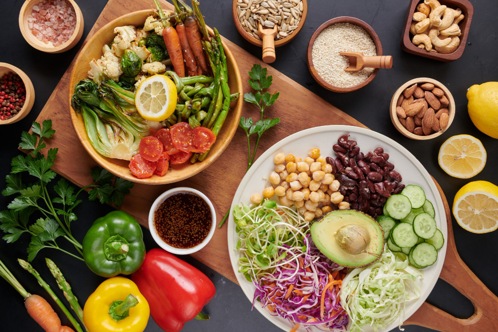
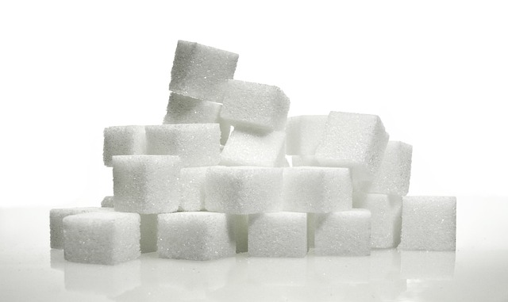

Apresentação
Alimentação Saudável, quando pensamos sobre esse tema e como executá-lo logo pensamos em comer muita verdura, feijão, etc. Mas será que não existe outras maneiras de se fazer para ter uma alimentação saúdavel?
Você já parou para pensar o porquê o açúcar faz mal? Por que comemos insetos e será que eles fazem mal para nossa alimentação? Se alimentos que julgamos saudáveis são mesmo saudáveis? Como funciona a pirâmide alimentar na química? Essas e outras dúvidas serão respondidas aqui para você!
Açúcar: compostos químicos que contribuem para o aumento da glicose no sangue
O açúcar está presente em muitos compostos orgânicos e se apresenta em formas variadas dependendo do composto natural no qual está presente. Por exemplo, o açúcar presente nas frutas é a frutose, o açúcar presente no leite é a lactose, o que está presente na cana de açúcar é a sacarose, entre outros;
Composição
O açúcar em sua forma mais simples inclui a glicose, a ribose e a frutose, já na sua forma mais complexa apresenta a maltose, a sacarose e a lactose(açúcar do leite);
Sacarose
Este é o açúcar mais comum, conhecido como açúcar de mesa. É um tipo de dissacarídeo feito a partir da combinação dos monossacarídeos glicose e frutose. A fórmula química ou molecular da sacarose é C12 H22 O11, o que significa que cada molécula de açúcar contém 12 átomos de carbono, 22 átomos de hidrogênio e 11 átomos de oxigênio;
Fórmulas para diferentes açúcares:
 Arabinose- C5 H10 O5
Arabinose- C5 H10 O5- Frutose- C6 H12 O6
- Galactose- C6 H12 O6
- Glicose- C6 H12 O6
- Lactose- C12 H22 O11
- Inositol- C6 H12 O6
- Manose- C6 H12 O6
- Ribose- C5 H10 O5
- Trealose- C12 H22 O11
- Xílose- C5 H10 O5
Muitos açúcares compartilham a mesma fórmula química, portanto, não é uma boa maneira de distinguir-los. A estrutura do anel, localização e tipo de ligações químicas e estrutura tridimensional são usadas para distinguir entre os açúcares.
Além disso, o excesso de consumo de açúcar pode levar ao ganho de peso, principalmente devido à glicose, que é fornecida pelo organismo, causando picos de insulina que promovem o armazenamento de gordura. O consumo excessivo de frutose, presente em açúcares aumentados, como xarope de milho rico em frutose, pode contribuir indiretamente para o acúmulo de gordura no fígado, aumentando o peso corporal. Portanto, é importante moderar o consumo de açúcar para manter um peso saudável.
Insetos: compostos químicos na composição que podem se tornar ofensivos para o consumo humano.

Os compostos ofensivos nos insetos para consumo humano geralmente referem-se a substâncias que podem ser indigestas, desagradáveis ao paladar ou potencialmente tóxicas em quantidades excessivas. Alguns desses compostos incluem:
- Alcaloides: Algumas espécies de insetos podem conter alcaloides, compostos químicos que podem ser tóxicos para os seres humanos em determinadas concentrações.
- Fenóis: Certos insetos podem conter fenóis, substâncias químicas que podem causar sabor amargo ou desagradável.
- Ácido fórmico: Presente em algumas espécies de formigas, o ácido fórmico pode causar irritação na pele e mucosas se consumido em grande quantidade.
- Histamina: Alguns insetos podem conter histamina, uma substância que pode desencadear reações alérgicas em algumas pessoas.
- Metais pesados e pesticidas: Insetos podem acumular metais pesados ou resíduos de pesticidas, o que pode ser prejudicial à saúde humana se consumidos em excesso.
É importante notar que nem todos os insetos são inseguros para o consumo humano. Na verdade, muitas culturas em todo o mundo consomem alimentos como fonte de proteína, e esses alimentos são frequentemente criados e preparados de maneira segura. No entanto, a segurança do consumo de insetos depende de fatores como a espécie de insetos, seu ambiente, como foram criados e como foram preparados para consumo.
É fundamental garantir que os insetos consumidos para alimentação humana sejam provenientes de fontes seguras e confiáveis, seguindo ordens de processamento e controle de cultivo, á fins de minimizar riscos à saúde.
Alimentos que parecem saudáveis mas não são:
- Embutidos (presunto, salsicha, salame e peito de peru): Contêm conservantes como nitrito e nitrato de sódio. Quando essas substâncias interagem com compostos presentes na carne, podem formar nitrosaminas. As nitrosaminas são compostos químicos conhecidos por serem potencialmente carcinogênicos, ou que significam que podem aumentar o risco de câncer, especialmente quando consumidos em aspectos específicos.
- Bolachas integrais: Mesmo que sejam chamadas de integrais, muitas delas contêm aditivos químicos, açúcares e gorduras. Além disso, o açúcar e o açúcar invertido (um xarope produzido a partir do açúcar) apresentam esses produtos podem aumentar os níveis de glicose no sangue. Os emulsificantes podem favorecer o aumento do colesterol e a dislipidemia, que é um desequilíbrio nos níveis de lipídios no sangue.
- Barra de Cereais: Muitas barras de cereais contendo carboidratos orgânicos, como açúcar, sacarose e xarope de glicose, que podem causar picos nos níveis de glicose no sangue. Além disso, os cereais usados nas barras podem ser orgânicos, como os flocos de milho e arroz, que possuem baixo teor de fibras e valor nutricional.
- Sopa instantânea: Essas sopas geralmente contêm uma grande quantidade de aditivos químicos devido ao processo de industrialização, incluindo muito sódio e glutamato monossódico, que são usados para realçar o sabor. Além disso, a adição de farinha refinada para dar consistência pode aumentar o teor de carboidratos orgânicos na sopa, o que pode afetar níveis de glicose sanguínea e saúde em geral.
- Chocolate Diet: Embora o chocolate diet não contenha açúcar, ele frequentemente tem uma alta quantidade de manteiga em pó ou gordura hidrogenada, que são prejudiciais à saúde cardiovascular. Além disso, pode conter maltodextrina, um tipo de carboidrato que afeta a glicemia, mesmo que não adoce diretamente, ou que pode ser problemático para pessoas que precisam controlar a ingestão de açúcar e carboidratos.
Corantes e conservantes
Os conservantes e corantes usados na indústria alimentícia podem conter compostos químicos que, em determinadas circunstâncias ou quando consumidos em quantidades excessivas, podem representar riscos para a saúde. Veremos alguns exemplos:
Conservantes: Os conservantes são substâncias químicas incluídas nos alimentos para aumentar a vida útil, retardando ou inibindo o crescimento de microrganismos, como bactérias, leveduras e fungos, que podem causar danos aos alimentos. Os conservantes são importantes para evitar a contaminação e garantir que os alimentos permaneçam seguros para o consumo por um período mais longo. Alguns exemplos comuns de conservantes incluem ácido sórbico, benzoato de sódio e nitritos.
Corantes: Os corantes são substâncias químicas que são adicionadas aos alimentos para conferir cor ou melhorar a aparência visual dos produtos alimentares. Eles são amplamente utilizados na indústria de alimentos para dar cor a produtos como balas, refrigerantes, doces, cereais e outros alimentos processados. Alguns exemplos de corantes incluem tartrazina, carmim e os corantes naturais obtidos de plantas e frutas.
Conservantes:
- Benzoato de sódio: Pode formar o composto benzeno, um conhecido carcinógeno em altas concentrações, quando combinado com ácido ascórbico (vitamina C) em bebidas acidificadas.
- Nitritos e nitratos: Usados principalmente em produtos cárneos, como salsichas e bacon, podem se transformar em nitrosaminas, que são substâncias consideradas potencialmente carcinogênicas.
Corantes:
- Tartrazina (FD&C Yellow 5), Vermelho Allura (FD&C Red 40), e Amarelo Crepúsculo (Sunset Yellow): Esses corantes, amplamente usados em uma variedade de alimentos, como refrigerantes, doces, bolos e cereais, balas, geleias, lanches e produtos de confeitaria, podem estar relacionados a respostas alérgicas em algumas pessoas e têm sido discutidos em relação à hiperatividade em crianças.
- Azul Brilhante FCF (FD&C Blue 1): Este corante azul, encontrado em bebidas esportivas, produtos de confeitaria e outras guloseimas, também foi associado a possíveis reações alérgicas, embora a evidência seja limitada.
Pirâmide Alimentar na Química

Grãos e Cereais (Base da Pirâmide):
Os grãos e cereais são ricos em amido, que consistem em moléculas de glicose ligadas por ligações glicosídicas. A glicose é um carboidrato que fornece energia ao corpo, sendo essencial para a função cerebral e muscular.
Vegetais:
Os vegetais contêm fibras alimentares, como a celulose, que são polímeros de glicose não digeríveis. Essas fibras absorvem água e aumentam o volume das fezes, facilitando o trânsito intestinal e promovendo a saúde digestiva.
Frutas:
As frutas são fontes de frutose, um monossacarídeo que fornece energia ao corpo. Além disso, as frutas contêm antioxidantes, como a vitamina C, que protegem as células contra danos oxidativos.
Proteínas (Carne, Peixe, Leguminosas):
As proteínas são compostas por aminoácidos. Os aminoácidos são as unidades fundamentais das proteínas, e sua estrutura química é fundamental para diversas funções no organismo, incluindo a formação de tecidos, enzimas e hormônios.
Laticínios (Leite, Queijo, Iogurte):
Os laticínios são fontes ricas em cálcio, um mineral importante para a saúde óssea. O cálcio apresenta-se na forma de íons Ca²⁺ e é fundamental para a estrutura e função dos ossos e dentes.
Gorduras (Óleos, Nozes, Sementes):
As gorduras são fornecidas por ácidos graxos, que podem ser saturados ou insaturados. Os ácidos graxos desempenham um papel crucial na composição das membranas celulares e na produção de energia.
Açúcares e Doces (Topo da Pirâmide):
Este grupo contém principalmente açúcares simples, como sacarose (açúcar de mesa) e glicose. O consumo excessivo de açúcares simples pode levar a problemas de saúde, uma vez que eles são absorvidos rapidamente no sangue, causando picos de glicose e insulina.
Consumir uma variedade de alimentos de todos os grupos em quantidades adequadas ajuda a garantir que recebamos os nutrientes essenciais e mantenhamos uma dieta balanceada.